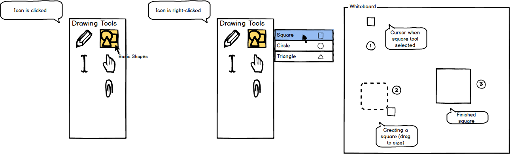
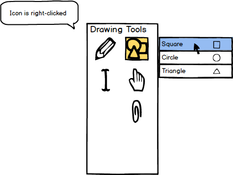
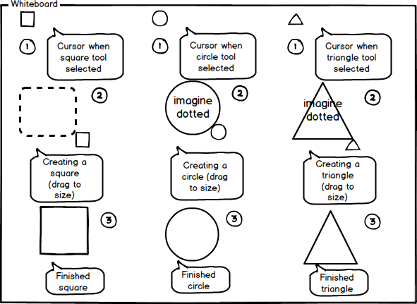

2.7.1. Basic Shapes Tool
To use the basic shapes tool, the user moves the cursor over to the 'Drawing Tools' window and clicks on the basic shapes icon. As
shown below in Figure 1, once the tool is clicked, the system responds by highlighting the tool and displaying the name of the tool
in small text under the cursor.
All Drawing Tools use vector-based model as opposed to paint-based model. This allows the user to put objects down on a layer and still be able
to edit objects created with the Drawing Tools (stretched/moved/etc). Vector-based modeling allows for a broader range of customization.

Figure 1: Basic shapes tool icon.
Once the drawing tool has been selected, the user may change the type of shape by right-clicking the basic shapes tool bringing up
a drop down menu to the right of the icon listing all available shapes as shown in Figure 2. In this case, the user selects the
square tool.

Figure 2: Drop down menu of basic shapes.
When the user has finally selected a tool, the cursor changes into that shape representing that the user is ready to use the tool
as shown below in Figure 3 picture (1). The user then creates the shape by clicking and dragging the shape to its desired size as in (2).
Finally, to complete the shape, the user releases the mouse at the desired size and the shape is filled in as shown in (3). All shape tools
are shown below in Figure 3.

Figure 3: Using the shape tool to create a shape.
Prev: [none]
| Next: color-palette
| Up: drawing-overview
| Top: index